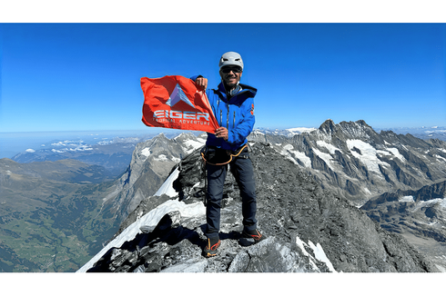
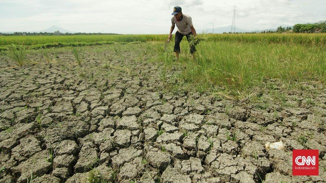
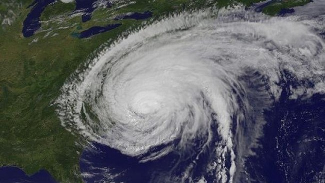

Hadapi Cuaca Ekstrem, Tim Pendaki Indonesia Berhasil Capai Puncak Gunung Eiger

Komite Ekspedisi Wanadri Indonesia (KEWI) menggelar misi ekspedisi Alpine Trilogy yang meliputi pendakian ke tiga puncak gunung di Pegunungan Alpen, y
Read more
Selamat Datang September Tak Ceria, Puncak Kekeringan Kedua

Kekeringan akan melanda indonesia pada bulan september ini
Read more
Supermoon Biru Bikin Badai Makin Dahsyat

Fenomena Blue Moon yang terjadi pada Rabu (30/8) hingga Kamis (31/8) disebut membuat badai makin dahsyat.Apa sebabnya?
Read more